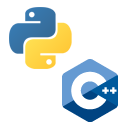

Over the years I've contributed many features & solved many bugs in the
open-source Linux platform elementary OS. I also wrote
two widely used apps, AppEditor
and Eddy in the Vala programming
language.

Python And C++ Development
TMTrackNN is one
of my projects that uses Python and C++. It utilises neural networks to
generate new tracks for a game called TrackMania. Read more.
Graphic Design
Occasionally, I also like to create new banners, logos and posters in Photoshop or GIMP.
Check out the Gallery or the YouTube channel to
see my portfolio.